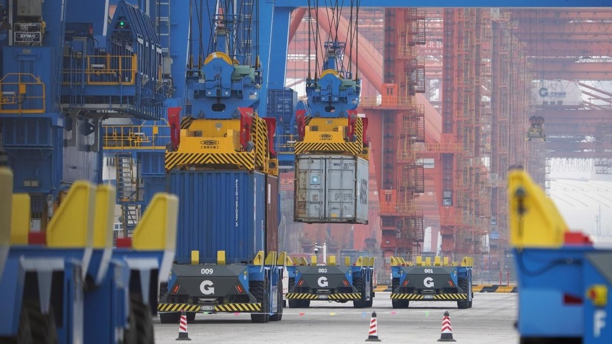
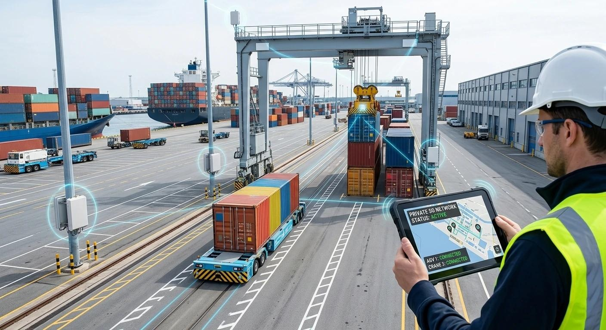
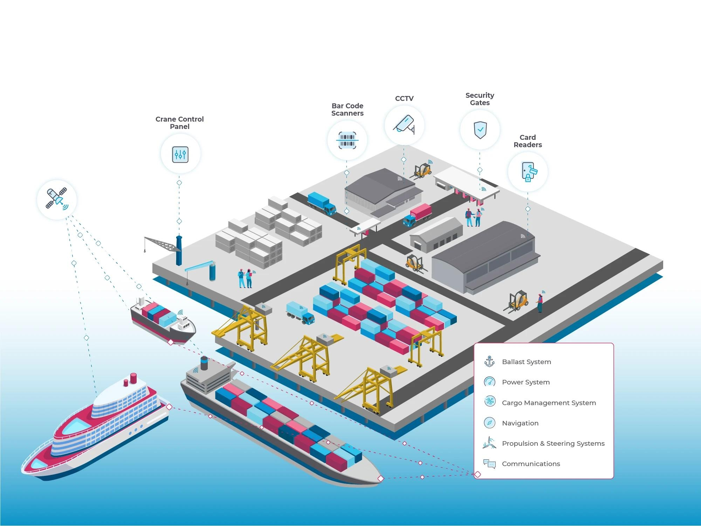
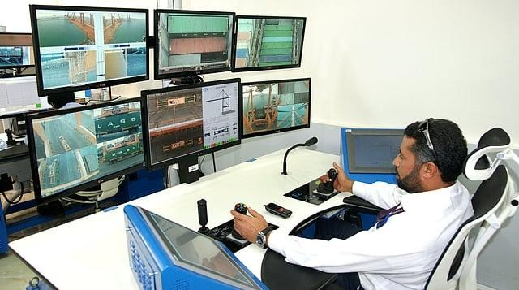
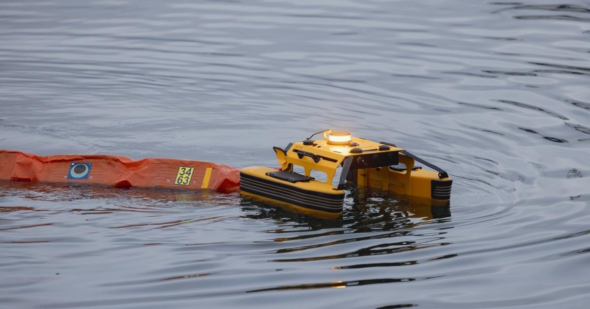
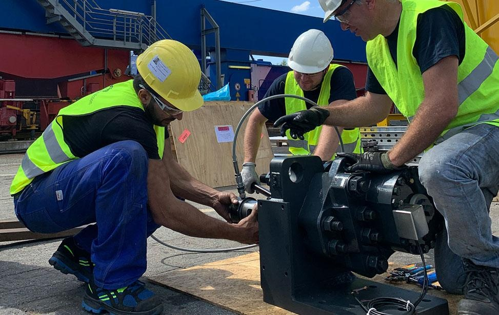
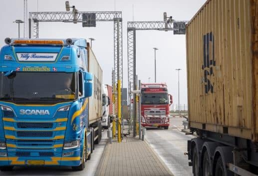
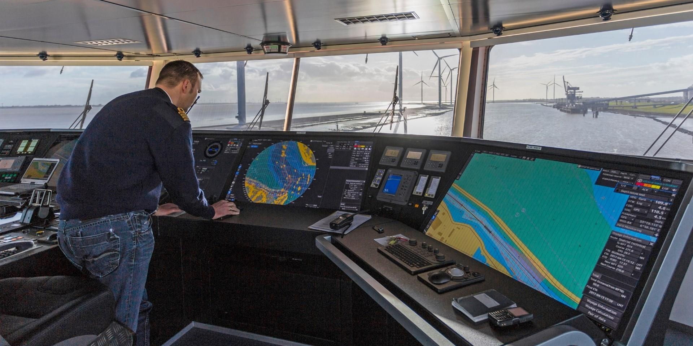
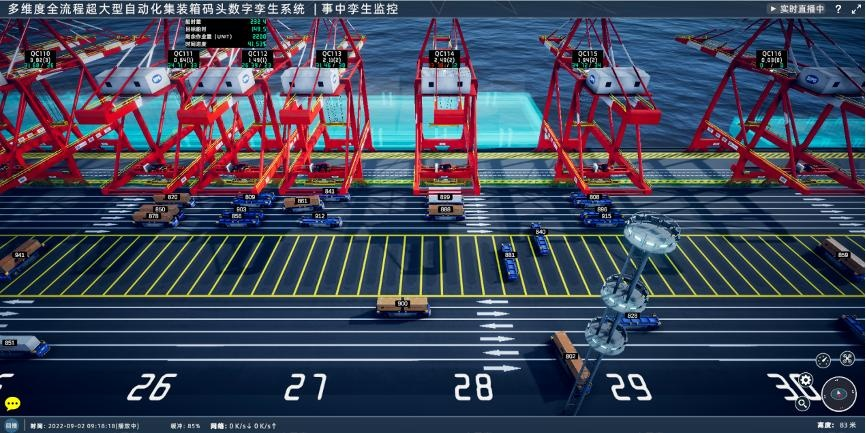
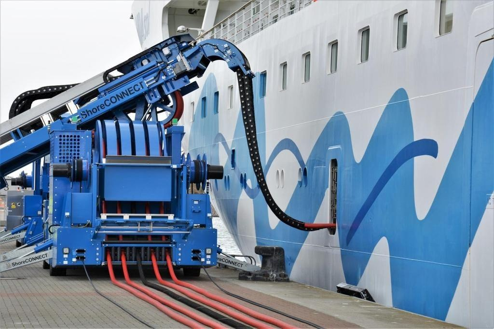

Grúas STS y Vehículos AGV
Las grúas pórtico automatizadas descargan contenedores directamente sobre Vehículos de Guiado Automático (AGV) que se desplazan por el patio mediante sensores láser y magnéticos sin conductor a bordo.
Bienvenido al portal educativo del Proyecto T.M.T. (Trabajo Marítimo Tecnológico). Explora de forma clara y didáctica cómo la robótica industrial, la inteligencia artificial y los gemelos digitales están reconfigurando las terminales portuarias 4.0 a nivel global.

Supervisión en tiempo real de grúas y vehículos AGV mediante red privada 5G.
Reduciendo la brecha entre la formación marítima tradicional en aula y la industria portuaria 4.0.
En la actualidad existe una marcada brecha entre los contenidos teóricos tradicionales y la acelerada evolución tecnológica de las terminales automatizadas. El Proyecto T.M.T. nace como una iniciativa académica dirigida a cadetes, estudiantes de marina mercante y alumnos de logística portuaria.
| Autor / Investigador: | Sebastián Alejandro Guevara Galindo |
|---|---|
| Institución: | Instituto de Marina Mercante Bilingüe de Coclé (IMMBC) |
| Área / Asignatura: | Tecnología Marítima y Logística |
| Asesor Técnico: | Ing. Johnathan José Galindo Gallardo |

Análisis estructurado de las tecnologías emergentes que impulsan la eficiencia, seguridad y sostenibilidad marítima.

Las grúas pórtico automatizadas descargan contenedores directamente sobre Vehículos de Guiado Automático (AGV) que se desplazan por el patio mediante sensores láser y magnéticos sin conductor a bordo.

Los operadores ya no trabajan en cabinas a 50 metros de altura; controlan las grúas desde estaciones ergonómicas asistidas por cámaras de alta definición, telemetría láser y sistemas anticolisión.

Embarcaciones autónomas no tripuladas patrullan las dársenas para realizar batimetrías (medición de profundidad), inspección de cascos y despliegue rápido de barreras ante derrames.

La automatización transforma el empleo portuario: requiere técnicos especializados en mantenimiento preventivo de actuadores hidráulicos, sensores ópticos y sistemas mecatrónicos pesados.

Mediante pórticos equipados con cámaras de Reconocimiento Óptico de Caracteres (OCR) e Inteligencia Artificial, el puerto identifica automáticamente la matrícula del camión, el código ISO del contenedor y el estado de los sellos de seguridad sin detener el flujo vehicular, reduciendo los tiempos de espera de horas a minutos.

Los puentes de mando modernos integran radares ARPA, cartas electrónicas (ECDIS) y algoritmos de IA que se comunican directamente con el sistema de tráfico portuario (VTS) para calcular la velocidad óptima de arribo (*Just-In-Time Arrival*), ahorrando combustible y evitando congestiones en la bahía.

Réplicas virtuales en 3D conectadas mediante sensores IoT reproducen en tiempo real cada movimiento del puerto. Permiten simular maniobras de estiba, predecir cuellos de botella y coordinar el Sistema Operativo de la Terminal (TOS) con precisión milimétrica.

Brazos robóticos articulados (como el sistema ShoreCONNECT) conectan los buques a la red eléctrica de alta tensión terrestre. Esto permite apagar los motores auxiliares diésel mientras el barco está atracado, reduciendo a cero las emisiones de carbono y el ruido en la terminal.
Referentes internacionales de automatización portuaria y vocabulario esencial para estudiantes marítimos.
| Terminal Portuaria | Ubicación | Tecnologías Destacadas | Impacto Operativo |
|---|---|---|---|
| Puerto de Róterdam (Maasvlakte II) | Países Bajos (Europa) | Flota de AGV eléctricos guiados por transpondedores, grúas remotas y plataforma IoT con IBM. | Operación continua 24/7 con cero emisiones locales y alta precisión en ventanas de atraque. |
| Puerto de Shanghái (Terminal de Yangshan Fase IV) | China (Asia) | Mayor terminal automatizada del mundo. Gemelo digital integral, grúas puente autónomas y red 5G. | Manejo superior a 6 millones de TEU anuales en la terminal con reducción del 70 % de personal en patio. |
| Puerto de Singapur (Tuas Mega Port) | Singapur (Asia) | Control de tráfico marítimo por IA, flota de más de 1.000 AGV proyectados y drones de inspección. | Consolidación de todas las operaciones en una sola mega-terminal inteligente de próxima generación. |
Vehículo autónomo sin conductor utilizado para transportar contenedores entre el muelle de descarga y el patio de almacenamiento.
Grúas pórtico gigantes ubicadas al borde del muelle diseñadas para cargar y descargar contenedores directamente desde los buques.
Modelo virtual tridimiensional de una terminal física que recibe datos en vivo de sensores para monitorear y simular operaciones.
Software central ("cerebro del puerto") que planifica, controla y asigna la ubicación exacta de cada contenedor y equipo.
Tecnología de visión artificial instalada en grúas y pórticos que lee automáticamente los códigos de contenedores y patentes de camiones.
Suministro de energía eléctrica desde tierra a los buques atracados para que apaguen sus motores diésel auxiliares.
Este portal es un proyecto de divulgación estudiantil en actualización mensual. Si eres estudiante, docente o profesional del sector marítimo y deseas compartir consultas o sugerencias técnicas, completa el formulario.